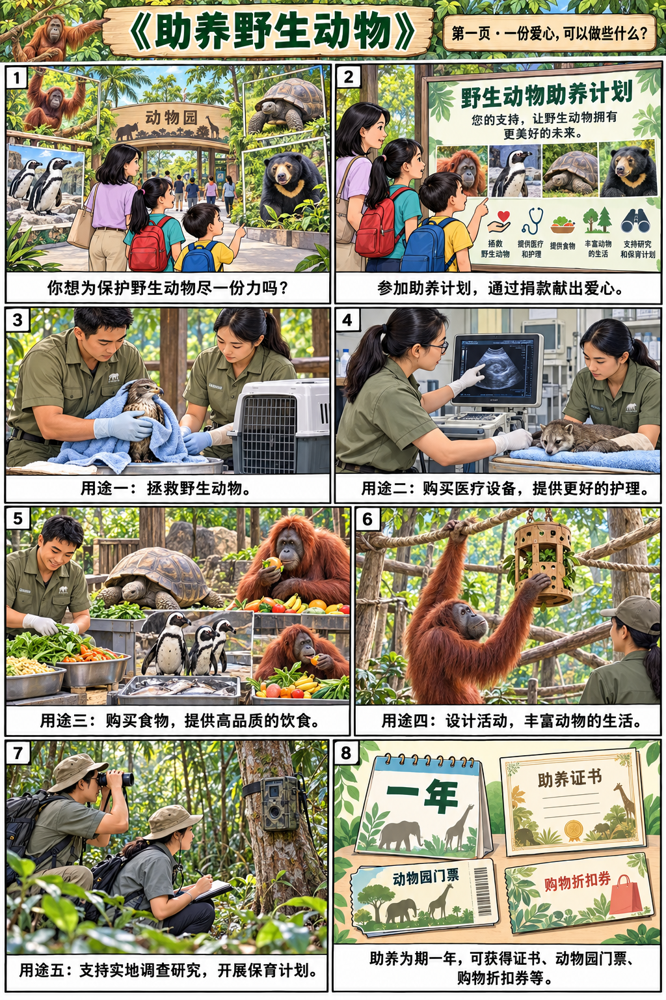
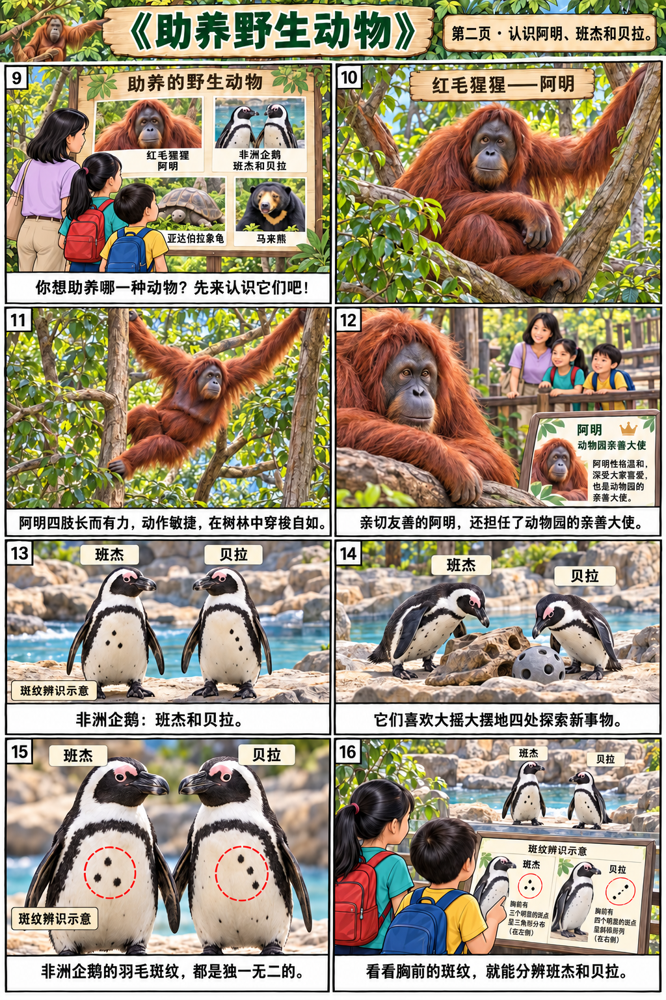
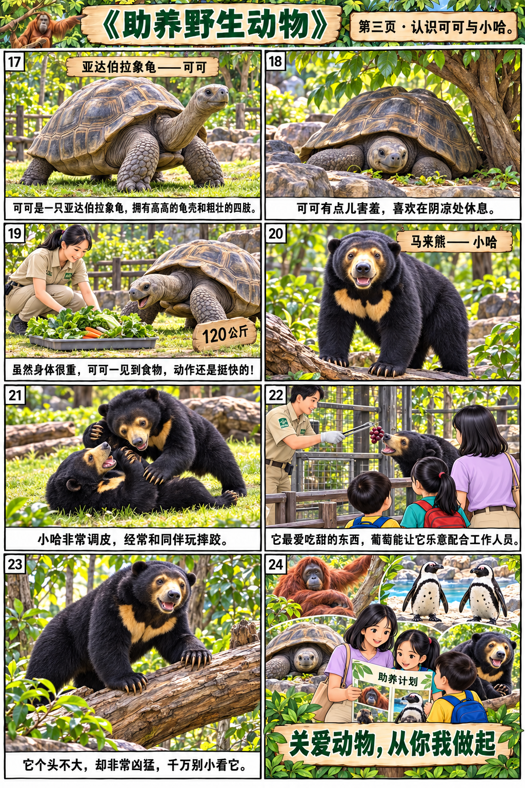

课文主页 / 漫画回读
助养野生动物






助养计划
第1段
你想为保护野生动物尽一份力吗？你可以参加新加坡动物园推出的野生动物助养计划，通过捐款，献出你的爱心。
第2段
捐款用途： 拯救野生动物。 购买医疗设备，为动物提供更好的护理。 购买食物，为动物提供高品质的饮食。 作为活动经费，为动物设计活动，丰富它们的生活。 支持实地调查研究，开展野生动物保育计划。
第3段
助养期限及提供的优惠： 为期一年。助养者可获得证书、动物园门票、购物折扣券等。
关爱动物，从你我做起
请选择你想助养的动物
第4段
阿明有着长而有力的四肢，它动作敏捷，在树林中穿梭自如。阿明亲切友善，还担任了新加坡动物园的亲善大使。
第5段
班杰和贝拉喜欢大摇大摆地四处探索新事物。非洲企鹅身上的羽毛斑纹都是独一无二的。我们可以通过它们胸前的斑纹来辨识班杰和贝拉。
第6段
可可有点儿害羞，喜欢躲在阴凉处休息。它嘴很馋，虽然重120公斤，但一见到食物，动作还是挺快的。
第7段
小哈非常调皮，经常和同伴玩摔跤。它最爱吃甜的东西，只要给它一串葡萄，它就会乐意和工作人员配合。它个头不大，却非常凶猛，千万别小看它。